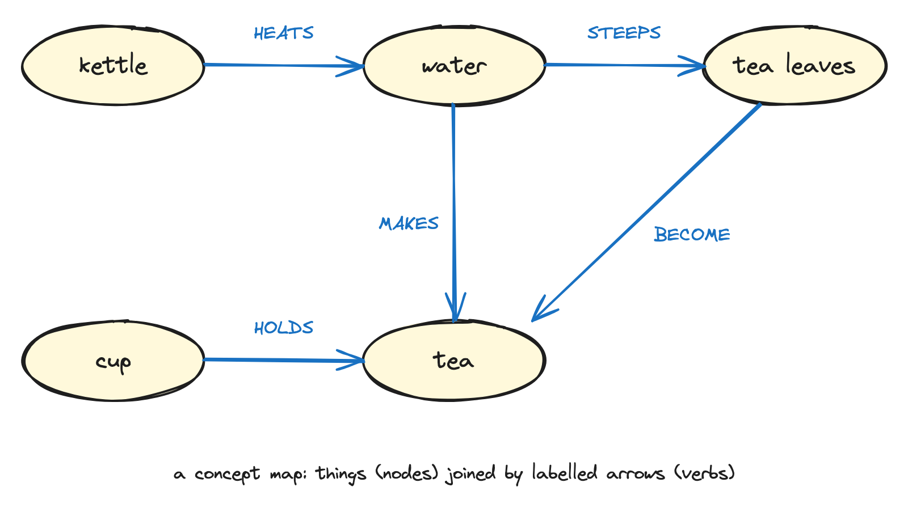
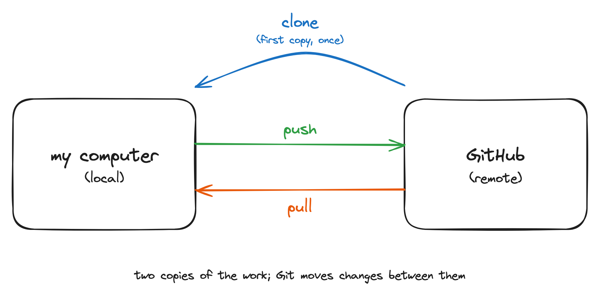
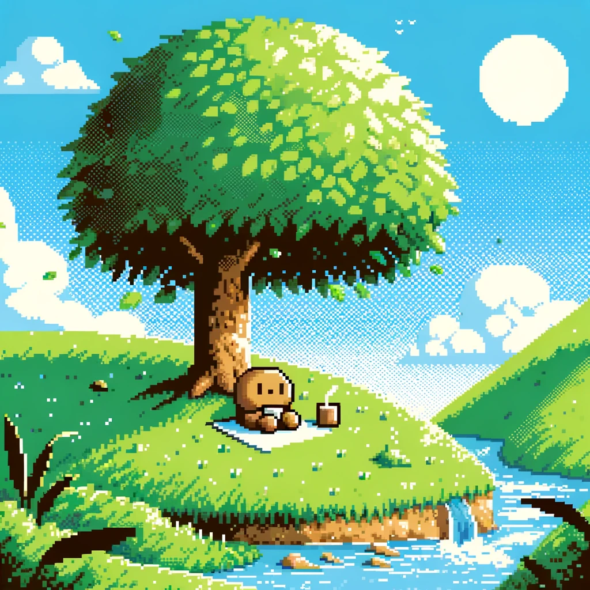
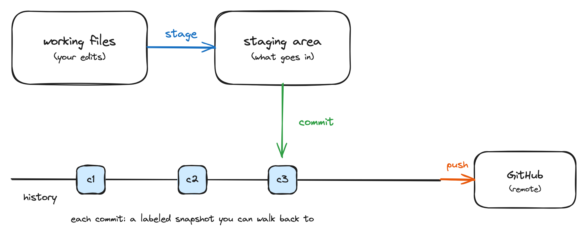
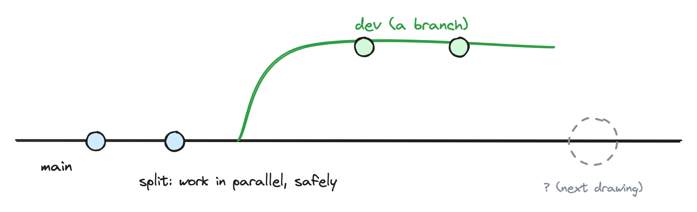
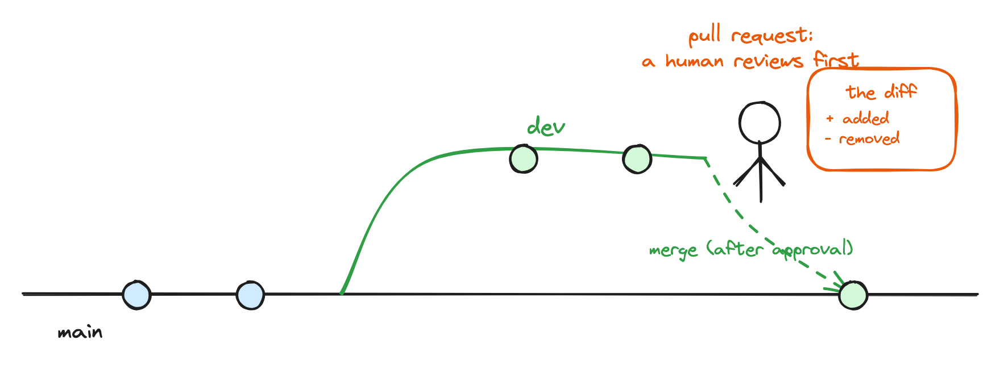

Git for Scientists
Global Health Engineering - ETH Zurich
Invalid Date
Lars Schöbitz
By the end of this workshop, participants will be able to:
Create and clone a repository, and run the full pull, stage, commit, push cycle from the RStudio IDE, including reverting a commit.
Work with branches and pull requests: create a branch, open a pull request, review a colleague’s pull request, and merge after review.
Publish a rendered document via GitHub Pages, and draw a concept map of how Git and GitHub fit together.
A concept map is things (nodes) joined by labelled arrows, where every label is a verb.

Read an arrow out loud and it becomes a sentence: “the kettle HEATS the water.”
How does a document you write reach your co-author and come back? Draw it as a concept map.
Place the yellow sticky note on your laptop when your map is done.
Projector goes to sleep. We draw this one by hand.

Watch first; your turn comes next. Hands off the keyboards.
website
.RData
|>
.gitignore
website.Rproj
Follow along on the screen.
gitrepos
Place the yellow sticky note on your laptop when you see the two yellow ? icons.
Please get up and move! Leave your emails alone. We continue at 11:15.


Watch first; your turn comes next.
README.md
Place the yellow sticky note on your laptop when you can see your commit on GitHub.
github.com/USERNAME
What happens?
Place the yellow sticky note on your laptop when something unexpected happens.
Back at 12:55. The afternoon starts hands-on, and your partner is waiting for you.

Watch first; your turn comes next. New repo, new superpower.
man-washinvestments-USERNAME
dev
origin
index.qmd
main
Place the yellow sticky note on your laptop when your push has finished.

Watch first; your turn comes next. This is the moment the day was built for.
Partner not ready? Review the seed PR in your own repository instead. Nobody waits on anybody.
Place the yellow sticky note on your laptop after the switch back to dev.
Together, on your merged manuscript:
/docs
Draw a concept map of Git and GitHub as you understand them now.
With your consent, I would like to photograph both maps (anonymously) to improve this workshop.
create , clone , commit , push , branch , pull request , review , merge , publish
All material is licensed under Creative Commons Attribution Share Alike 4.0 International.
Slides created via revealjs and Quarto: https://quarto.org/docs/presentations/revealjs/
Access slides as PDF on GitHub